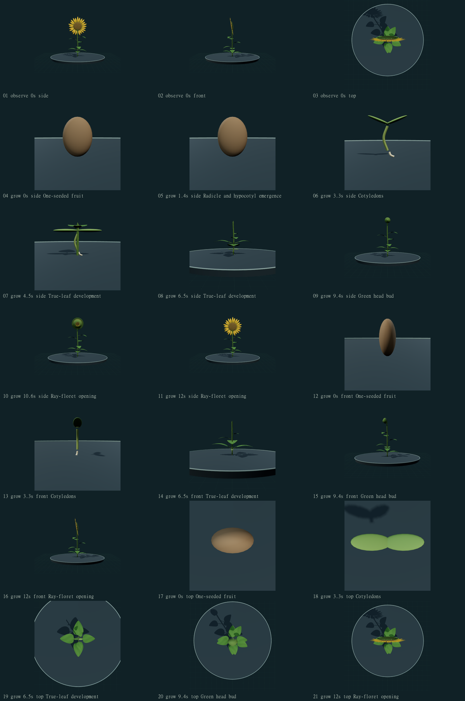
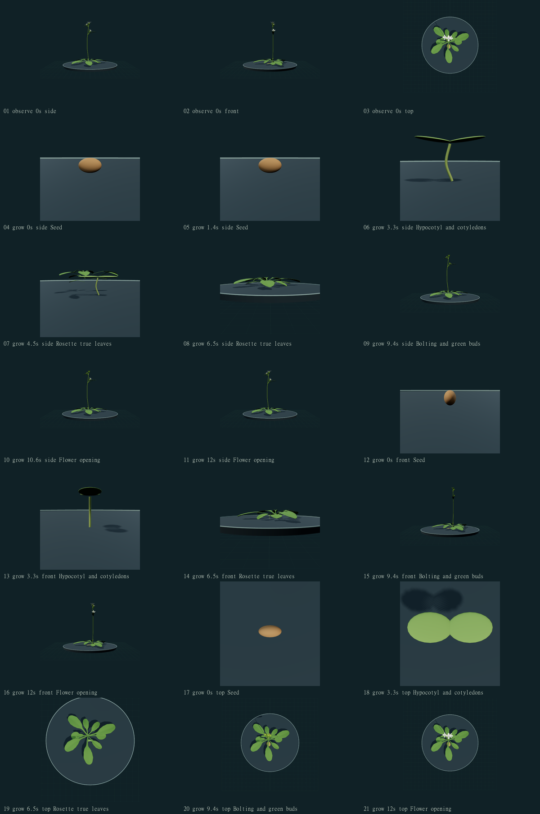
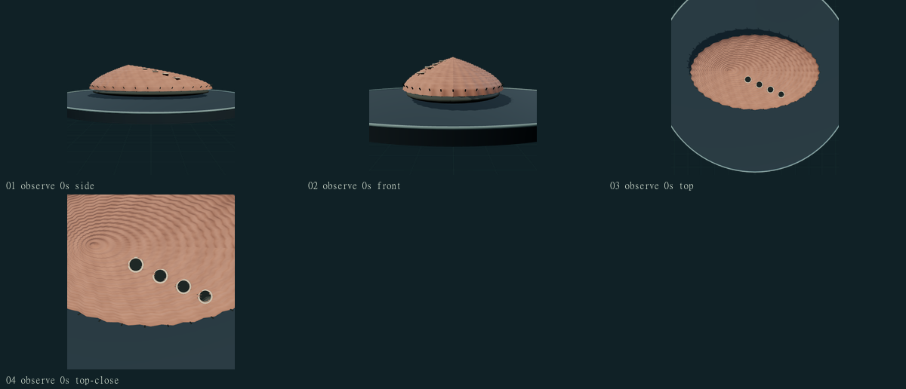
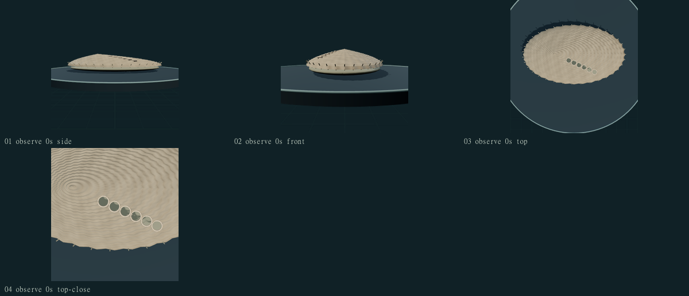

PHENOVOXEL ARCHIVE · v0.6.12 · 24 OCTOBER 2026Developmental landmarks and distinct shells.
Four initial reconstruction corrections, with actual side/front/top and stage views. These are educational authored studies; no independent biological validation or accuracy percentage is established.
250published catalogue records
4organisms reviewed in this release
50final rendered views inspected
0new species in this release
Open the archive · Download this report · Change report and remaining work
Plants are magnified differently at different stages. The twelve-second playback is not calendar time. Seventy other unsupported land-plant development actions are withheld; existing leaf/trap responses and mature forms remain available. Fungal/cellular development and the remaining collection-wide correction pass are unfinished.
Common sunflower · Helianthus annuus
Open the same-model viewer · 21 final views
Observed problems
- The earlier growth action resized mature botanical structures.
- The first rendered candidate still exposed a shortened flowering shaft above cotyledons and kept the fruit at the seedling base.
Changes reviewed
- Separate fruit/radicle/hypocotyl, cotyledon, true-leaf, green-head-bud and ray-floret stages.
- Withhold the flowering shaft at the cotyledon stage, taper the advancing epicotyl, and omit the discarded coat after cotyledon emergence.
- Two selected early opposite true-leaf pairs precede alternate leaves. Close stage inspection preserves the fixed root transform.

shape: Partial authored developmental landmarks
surface: Simplified original pigments and surface fields
movement: Ordered stage illustration; no calibrated growth, cell expansion or physiology
Still unresolved
- The selected fruit lacks detailed cypsela sculpture and a measured coat-rupture mechanism. Root branching, hypocotyl-hook mechanics and soil contact are incomplete.
- Juvenile true-leaf shape, trichomes, venation, internode growth and organ proportions remain authored approximations.
- The mature head is a single selected form. Disc-floret anther/style phases and centripetal anthesis are not simulated; cultivar/population variation is unrepresented.
Biological sources: source 1 · source 2 · source 3
Separate real reference: böhringer friedrich · CC BY-SA 2.5 · photograph/source and terms. The photograph is a reference, not a render or an accuracy measurement.
Original numerical geometry, pigments and developmental attachments: PhenoVoxel Archive contributors, MIT. No generated image is presented as an organism photograph.
Thale cress · Arabidopsis thaliana
Open the same-model viewer · 21 final views
Observed problems
- The original mature-form growth study did not separate a seedling from the flowering specimen.
- The first rendered candidate left the separate yellow source cotyledon mesh visible beneath the seed.
Changes reviewed
- Retain the credited adult source topology and UVs while adding original seed/hypocotyl/cotyledon and green-bud attachments.
- Withhold mature source cotyledons in the juvenile stages; true rosette leaves precede bolting, buds and flower opening.
- Preserve adult inspection and separate the authored twelve-second sequence from experimental calendar time.

shape: Partial juvenile additions on a retained artist adult
surface: Creator surface plus authored leaf/petal fields; unvalidated
movement: Ordered stage illustration; no measured developmental rates
Still unresolved
- Seed sculpture, coat rupture, primary/lateral roots, rosette phyllotaxis and measured leaf-initiation rates remain incomplete.
- The retained adult artist plant is simplified; branch architecture, floral details and siliques are not fully reconstructed.
- Source mature cotyledons return with the adult form. Senescence and physiological flowering are not simulated.
Biological sources: source 1
Separate real reference: Original uploader was Brona at en.wikipedia . User:Roepers at nl.wikipedia · CC BY-SA 3.0 · photograph/source and terms. The photograph is a reference, not a render or an accuracy measurement.
Retained artist model: Arabidopsis thaliana model · lamujer (https://sketchfab.com/lamujer) · CC BY 4.0 · source. Original delivered SHA-256: cb534f80eb65ff3a67b7064620e6ca042291583c007bf0aa55b6b7fc6821524f.
Red abalone · Haliotis rufescens
Open the same-model viewer · 4 final views
Observed problems
- Red and European abalone shared a five-open-pore pattern and a similar dome.
- The unavailable feeding label incorrectly implied particle capture.
Changes reviewed
- Selected red adult has four open respiratory pores and a higher authored dome. Three to four is a usual published range, not an invariant count.
- Dark exposed lateral tissue and a yellowish ventral foot cue replace the shared undifferentiated tone.
- Use algal-grazing wording while keeping the unimplemented feeding action unavailable.

shape: Selected pore/dome distinction; shell remains simplified
surface: Authored pigment/relief; substantially less complex than the real reference
movement: Feeding and locomotor mechanisms remain unavailable
Still unresolved
- Spiral geometry, shell thickness, closed-pore scars, irregular ornament and epibiont cover are simplified.
- Head, eyes, cephalic/epipodial tentacles and continuous mantle/foot anatomy remain incomplete.
- The current heavily overgrown living photograph does not independently establish a pore count. Pedal waves, radular grazing and displacement remain unavailable.
Biological sources: source 1
Separate real reference: Southwest Fisheries Science Center, NOAA Fisheries Service · Public domain · photograph/source and terms. The photograph is a reference, not a render or an accuracy measurement.
Original numerical geometry, pigments and developmental attachments: PhenoVoxel Archive contributors, MIT. No generated image is presented as an organism photograph.
European abalone · Haliotis tuberculata
Open the same-model viewer · 4 final views
Observed problems
- European abalone shared the red abalone five-open-pore pattern and dome.
- A shell photograph was labeled as if it documented the whole living organism.
Changes reviewed
- Selected European shell has six open respiratory pores within the usual published five-to-seven range and a lower authored dome.
- The existing shell reference is explicitly identified as shell-only; it is not evidence for soft-body anatomy or movement.
- Algal grazing remains a sourced biological behavior with unavailable animation.

shape: Selected shell example with six openings; uncalibrated proportions
surface: Simplified numeric shell relief and soft-tissue pigment
movement: Feeding and locomotor mechanisms remain unavailable
Still unresolved
- Coiling, surface sculpture, pore-scar closure and epibiont variation remain simplified.
- The separate shell photograph cannot verify the modeled foot/mantle tissue. Species-specific soft anatomy is incomplete.
- No grazing, pedal-wave locomotion, measured forces or displacement is simulated.
Biological sources: source 1 · source 2
Separate real reference: Hans Hillewaert · CC BY-SA 4.0 · photograph/source and terms. Shell only; it does not verify living soft tissues or movement.
Original numerical geometry, pigments and developmental attachments: PhenoVoxel Archive contributors, MIT. No generated image is presented as an organism photograph.
What remains to reach 550
| Reporting group | Published | Target | Missing |
|---|
| Animalia | 103 | 220 | 117 |
| Plantae | 72 | 165 | 93 |
| Fungi | 36 | 83 | 47 |
| Protista | 25 | 55 | 30 |
| Monera | 14 | 27 | 13 |
300 additional published records are missing. Fifty saved expansion drafts still need individual final source/render/motion review, fixes and publication. Another 250 records have no saved expansion draft. Drafts are not included in the public total. Each addition still needs an accepted species concept, source-linked anatomy/ecology, licensed authentic image, distinct appropriate reconstruction, honest behavior status, actual screenshots and tested publication.
Protista and Monera are legacy reporting categories. Bacteria/Archaea and modern taxonomic affiliations remain separate; green algae can be in Plantae while appearing in the microeukaryote navigation group.
Passing 125 software checks does not establish realistic anatomy, measured development, validated locomotion or fitness for quantitative research. Expert review, measurements and life-stage-specific replacements remain necessary.